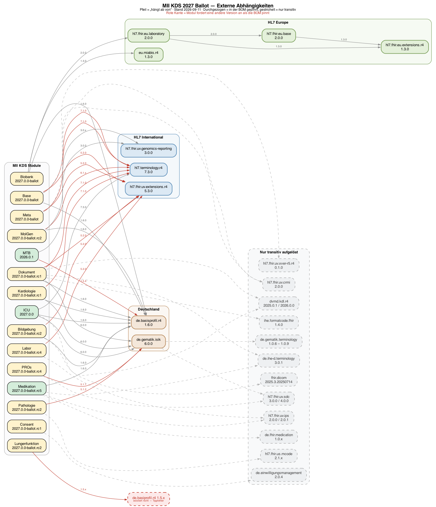

MII Kerndatensatz Complete
2027.0.0-ballot.19 - ballot

MII Kerndatensatz Complete
2027.0.0-ballot.19 - ballot

MII Kerndatensatz Complete - Local Development build (v2027.0.0-ballot.19) built by the FHIR (HL7® FHIR® Standard) Build Tools. See the Directory of published versions
| Official URL: https://www.medizininformatik-initiative.de/fhir/core/complete/ImplementationGuide/de.medizininformatikinitiative.kerndatensatz.complete | Version: 2027.0.0-ballot.19 | |||
| Active as of 2026-09-21 | Computable Name: MIIKerndatensatzComplete | |||
Dieses Paket ist die Bill of Materials (BOM) des MII Kerndatensatzes — eine kuratierte Zusammenstellung aller KDS-Module mit ihren kompatiblen Versionen. Es enthält keine eigenen Profile, sondern definiert, welche Modulversionen zusammen getestet und freigegeben wurden.
Die Module des Kerndatensatzes werden von verschiedenen Teams eigenständig weiterentwickelt und versioniert. Änderungen an einem Modul können Auswirkungen auf abhängige Module haben und müssen konsistent nach unten propagiert werden. Die BOM löst drei zentrale Herausforderungen:
Während das Meta-Modul (de.medizininformatikinitiative.kerndatensatz.meta) modulübergreifende Ressourcen bereitstellt, die von den einzelnen KDS-Modulen als Grundlage genutzt werden (Extensions, CodeSystems, Naming-Conventions), dient dieses Complete-Paket als gebündelter Output: Eine einzelne Abhängigkeit, die alle Module des Kerndatensatzes in ein Projekt einbindet.
Ballot-Stand 2027.0.0 (Stand 2026-09-21)
ICU
2027.0.0-ballot.3(publiziert 2026-09-17) löst die letzte 2026er-Kante auf: das Modul deklariert jetzt Base und Meta2027.0.0-ballot, Basisprofile 1.6.0, ISiK 6.0.0, Terminology 7.3.0 und DVMD KDL 2026.0.0 — und enthält wieder alle fünf Score-Profile, die der versehentlich publizierten2027.0.0fehlen. Damit ist die Ballot-Linie über alle 21 Module kohärent. Die älteren Notizen unten beschreiben den Weg dorthin.Diese BOM bildet den laufenden Ballot ab: Module mit einem 2027.0.0-Release sind auf dieses gepinnt (Base, Meta, Biobank, Studie, Bildgebung, Dokument, ICU, Mikrobiologie), alle übrigen auf ihre höchste stabile 2026er Version.
Die Ballot-Linie ist untereinander noch nicht kohärent: Die 2027.0.0-Releases deklarieren teilweise weiterhin die 2026er Basismodule als Abhängigkeit — Bildgebung erwartet Base 2026.0.1 und Meta 2026.0.0, Dokument erwartet Base 2026.0.0 und Meta 2026.0.0, Biobank und Studie erwarten Meta 2026.0.0, ICU 2027.0.0 erwartet Base 2026.0.1. Lediglich Base 2027.0.0-ballot.rc1 → Meta 2027.0.0-ballot.rc3 ist in sich stimmig.
Beim Auflösen können Base und Meta dadurch transitiv in zwei Versionen gezogen werden, was bei der Validierung doppelte Canonicals erzeugt. Im Abhängigkeitsgraphen unten sind diese Stellen rot gestrichelt markiert. Diese BOM ist deshalb ein Ballot-Arbeitsstand zum Review, kein freigegebener Versionsstand.
Neu in dieser BOM sind Kardiologie und Lungenfunktion (beide 2027.0.0-ballot.rc1). Lungenfunktion deklariert dabei die Abhängigkeit
de.basiprofil.r4— ein Tippfehler, das Paket existiert nicht und die Abhängigkeit ist nicht auflösbar. Soziodemographie ist angekündigt, aber in keiner Registry publiziert und daher nicht gepinnt.Meta ist in der finalen Ballot-Fassung:
2027.0.0-ballotvom 10.09.2026 löstballot.rc3ab — 0 Errors statt 386, 182 statt 175 Ressourcen.MolGen
2027.0.0-ballot.1verweist als erstes Modul durchgängig auf die finalen Fassungen von Base, Biobank und Meta. Dokument ist ebenfalls final, deklariert aber noch Baseballot.rc1und Metaballot.rc3.Dokument ist umgezogen:
ballot.rc2verweist auf Base und Meta der 2027er Linie — das letzte Modul, das noch an Base 2026.0.0 hing. Medikation ist in der finalen Fassung.Neu in der BOM: Symptome mit
2027.0.0-ballot— vollständig kohärent und mit 0 QA-Errors. PROs ist ebenfalls final, hängt aber unverändert an Meta2026.0.x.Base und Biobank sind ebenfalls in der finalen Ballot-Fassung und verweisen auf Meta
2027.0.0-ballot. Biobank hat dabei den Umzug auf MIABIS 1.3.0 vollzogen.Vollständig auf 2027er Abhängigkeiten sind damit Base, Biobank, Laborbefund, Medikation, MolGen und Pathologie.
Weiterhin am 2026er Stand hängen PROs (Meta 2026.0.x, unverändert seit 2026.7.0), Lungenfunktion (Base, Meta und Medikation je 2026.0.x — und weiterhin mit dem Tippfehler
de.basiprofil.r4), Bildgebung, Dokument, ICU, Kardiologie sowie Mikrobiologie, das Laborbefund 2026.0.3 fordert.
Alle Module dieser BOM auf einen Blick — die gepinnte Ballot-Version, das Package auf Simplifier und der aktuelle IG-Build. Details (GitHub-Repos, QA-Fehlerzahlen, Releases) stehen in den Modultabellen weiter unten.
| Modul | Package | Ballot-Version | IG (aktueller Build) |
|---|---|---|---|
| Base | …kerndatensatz.base |
2027.0.0-ballot | IG |
| Meta | …kerndatensatz.meta |
2027.0.0-ballot | IG |
| Medikation | …kerndatensatz.medikation |
2027.0.0-ballot | IG |
| Laborbefund | …kerndatensatz.laborbefund |
2027.0.0-ballot | IG |
| Biobank | …kerndatensatz.biobank |
2027.0.0-ballot | IG |
| ICU | …kerndatensatz.icu |
2027.0.0-ballot.3 | IG |
| Mikrobiologie | …kerndatensatz.mikrobiologie |
2027.0.0-ballot2 | IG |
| Molekulargenetik | …kerndatensatz.molgen |
2027.0.0-ballot.1 | IG |
| Pathologie | …kerndatensatz.patho |
2027.0.0-ballot | IG |
| Studie | …kerndatensatz.studie |
2027.0.0-ballot | IG |
| Bildgebung | …kerndatensatz.bildgebung |
2027.0.0-ballot.1 | IG |
| Dokument | …kerndatensatz.dokument |
2027.0.0-ballot.2 | IG |
| Onkologie | …kerndatensatz.onkologie |
2027.0.0-ballot.1 | IG |
| Seltene Erkrankungen | …kerndatensatz.seltene |
2027.0.0-ballot | IG |
| Molekulares Tumorboard | …kerndatensatz.mtb |
2027.0.0-ballot.1 | IG |
| PROs | …kerndatensatz.pros |
2027.0.0-ballot.1 | IG |
| Consent | …kerndatensatz.consent |
2027.0.0-ballot | IG |
| Kardiologie | …kerndatensatz.kardiologie |
2027.0.0-ballot | IG |
| Lungenfunktion | …kerndatensatz.lungenfunktion |
2027.0.0-ballot.1 | IG |
| Symptome | …kerndatensatz.symptom |
2027.0.0-ballot | IG |
| Soziodemographie | …kerndatensatz.soziodemographie |
2027.0.0-ballot | IG |

Automatisch generiert aus dep-graph-2027.dot via Graphviz. Knoten: grün = finale Version, gelb = Ballot/RC/Alpha, grau = in Entwicklung. Kanten: rot gestrichelt = das Modul deklariert noch die 2026er Version des Ziels, während diese BOM auf die 2027er Ballot-Linie pinnt.
Die Einteilung in Basis- und Erweiterungsmodule folgt der bisherigen Konvention des Kerndatensatzes. Diese Kategorisierung spiegelt jedoch nicht den aktuellen Reifegrad, die Verbreitung oder den Innovationscharakter der einzelnen Module wider. Wir arbeiten derzeit an einer differenzierteren Klassifikation, die den dynamischen Entwicklungen im MII-Ökosystem besser gerecht wird.
| Modul | Package | Version | GitHub | IG (aktueller Build) | Release |
|---|---|---|---|---|---|
| Base (Person, Fall, Diagnose, Prozedur, Consent) | de.medizininformatikinitiative.kerndatensatz.base |
2027.0.0-ballot | kerndatensatz-basis | 2027.0.0-ballot · 22 Fehler | v2027.0.0-ballot (2026-09-10) |
| Meta | de.medizininformatikinitiative.kerndatensatz.meta |
2027.0.0-ballot | kerndatensatz-meta | 2027.0.0-ballot · 0 Fehler | v2027.0.0-ballot (2026-09-10) |
| Medikation | de.medizininformatikinitiative.kerndatensatz.medikation |
2027.0.0-ballot | kerndatensatzmodul-medikation | 2027.0.0-ballot · 1 Fehler | v2027.0.0-ballot (2026-09-11) |
| Laborbefund | de.medizininformatikinitiative.kerndatensatz.laborbefund |
2027.0.0-ballot | kerndatensatzmodul-labor | 2027.0.0-ballot · 37 Fehler | v2027.0.0-ballot (2026-09-14) |
| Modul | Package | Version | GitHub | IG (aktueller Build) | Release |
|---|---|---|---|---|---|
| Biobank | de.medizininformatikinitiative.kerndatensatz.biobank |
2027.0.0-ballot | kerndatensatzmodul-biobank | 2027.0.0-ballot · 66 Fehler | v2027.0.0-ballot (2026-09-16) |
| ICU | de.medizininformatikinitiative.kerndatensatz.icu |
2027.0.0-ballot.3 | kerndatensatzmodul-intensivmedizin | 2027.0.0-ballot.3 · 698 Fehler | v2026.0.2 (2026-03-18) |
| Mikrobiologie | de.medizininformatikinitiative.kerndatensatz.mikrobiologie |
2027.0.0-ballot2 | kerndatensatzmodul-mikrobiologie | 2027.0.0-ballot2 · 206 Fehler | v2027.0.0-ballot2 (2026-09-14) |
| Molekulargenetik | de.medizininformatikinitiative.kerndatensatz.molgen |
2027.0.0-ballot.1 | kerndatensatzmodul-GenetischeTests | 2027.0.0-ballot.1 · 53 Fehler | v2027.0.0-ballot.1 (2026-09-13) |
| Pathologie | de.medizininformatikinitiative.kerndatensatz.patho |
2027.0.0-ballot | kerndatensatzmodul-PathologieBefund | 2027.0.0-ballot · 25 Fehler | v2027.0.0-ballot (2026-09-14) |
| Studie | de.medizininformatikinitiative.kerndatensatz.studie |
2027.0.0-ballot | kerndatensatzmodul-studie | 2027.0.0-ballot · 0 Fehler | v2027.0.0-ballot (2026-09-14) |
| Bildgebung | de.medizininformatikinitiative.kerndatensatz.bildgebung |
2027.0.0-ballot.1 | kerndatensatz-bildgebung | 2027.0.0-ballot.1 · 29 Fehler | v2027.0.0-ballot.1 (2026-09-15) |
| Dokument | de.medizininformatikinitiative.kerndatensatz.dokument |
2027.0.0-ballot.2 | kerndatensatz-dokument | 2027.0.0-ballot.2 · 2 Fehler | v2027.0.0-ballot.2 (2026-09-14) |
| Onkologie | de.medizininformatikinitiative.kerndatensatz.onkologie |
2027.0.0-ballot.1 | kerndatensatzmodul-onkologie | 2027.0.0-ballot.1 · 4669 Fehler | v2027.0.0-ballot.1 (2026-09-15) |
| Seltene Erkrankungen | de.medizininformatikinitiative.kerndatensatz.seltene |
2027.0.0-ballot | kerndatensatzmodul-seltene-erkrankungen | 2027.0.0-ballot · 353 Fehler | v2026.0.1 (2026-03-30) |
| Molekulares Tumorboard | de.medizininformatikinitiative.kerndatensatz.mtb |
2027.0.0-ballot.1 | kerndatensatzmodul-molekulares-tumorboard | 2027.0.0-ballot.1 · 55 Fehler | v2027.0.0-ballot.1 (2026-09-15) |
| PROs | de.medizininformatikinitiative.kerndatensatz.pros |
2027.0.0-ballot.1 | kerndatensatzmodul-proms | 2027.0.0-ballot.1 · 214 Fehler | v2027.0.0-ballot.rc5 (2026-09-11) |
| Consent | de.medizininformatikinitiative.kerndatensatz.consent |
2027.0.0-ballot | kerndatensatzmodul-consent | 2027.0.0-ballot · 0 Fehler | v2027.0.0-ballot (2026-09-14) |
| Kardiologie | de.medizininformatikinitiative.kerndatensatz.kardiologie |
2027.0.0-ballot | kerndatensatz-kardiologie | 2027.0.0-ballot · 42 Fehler | v2027.0.0-ballot (2026-09-14) |
| Lungenfunktion | de.medizininformatikinitiative.kerndatensatz.lungenfunktion |
2027.0.0-ballot.1 | kerndatensatz-lungenfunktion | 2027.0.0-ballot.1 · 1147 Fehler | v2027.0.0-ballot.1 (2026-09-15) |
| Symptome | de.medizininformatikinitiative.kerndatensatz.symptom |
2027.0.0-ballot | kerndatensatzmodul-symptome | 2027.0.0-ballot · 0 Fehler | v2027.0.0-ballot (2026-09-11) |
| Soziodemographie | de.medizininformatikinitiative.kerndatensatz.soziodemographie |
2027.0.0-ballot | kerndatensatz-soziodemographie | 2027.0.0-ballot · 1 Fehler | v2027.0.0-ballot (2026-09-14) |
Derzeit keine — Soziodemographie ist seit dem 16.09.2026 publiziert und in der Haupttabelle geführt.
Die BOM pinnt nicht nur die MII-Module, sondern auch die externen Pakete, gegen die sie gebaut sind. Gepinnt wird jeweils die höchste Version, die ein MII-Modul transitiv tatsächlich anfordert — nicht die neueste verfügbare. Eine Version, gegen die kein Modul gebaut wurde, gehört nicht in eine BOM.
Pakete ohne Pin werden weiterhin transitiv aufgelöst; ihre Version ergibt sich aus dem anfordernden Modul.
| Paket | Version | Angefordert von | Anmerkung |
|---|---|---|---|
Deutsche Basisprofile R4 (de.basisprofil.r4) |
1.6.0 | Base, Biobank, ICU, Bildgebung, Dokument, Kardiologie | ältere Module fordern noch 1.5.x; Lungenfunktion fordert das nicht existierende de.basiprofil.r4 |
HL7 Terminology (hl7.terminology.r4) |
7.3.0 | ICU 2027.0.0 | Module uneinig: 5.0.0 / 6.1.0 / 6.5.0 / 7.1.0 / 7.2.0 / 7.3.0 |
HL7 Extensions R4 (hl7.fhir.uv.extensions.r4) |
5.3.0 | Base 2026.0.1, CRMI 2.0.0 | Module uneinig: 5.1.0 / 5.2.0 / 5.3.0 |
HL7 Clinical Genomics (hl7.fhir.uv.genomics-reporting) |
3.0.0 | Molekulargenetik, MTB | einheitlich |
HL7 Europe Base (hl7.fhir.eu.base) |
2.0.0 | EU Laboratory (transitiv über Biobank) | einheitlich |
HL7 Europe Laboratory (hl7.fhir.eu.laboratory) |
2.0.0 | Biobank 2027.0.0-ballot.rc1 | einheitlich |
HL7 Europe Extensions R4 (hl7.fhir.eu.extensions.r4) |
1.3.0 | EU Base, EU Laboratory | einheitlich |
MIABIS (eu.miabis.r4) |
1.3.0 | Biobank | Umzug auf die neuen MIABIS-Pfade in 2027.0.0-ballot vollzogen |
ISiK (de.gematik.isik) |
6.0.0 | ICU 2027.0.0, Dokument 2027.0.0-ballot.rc1, Kardiologie | Pathologie fordert 5.1.2, PROs 5.1.1 |
| Paket | Version | Angefordert von |
|---|---|---|
Einwilligungsmanagement (de.einwilligungsmanagement) |
2.0.4 | Consent |
Deutsche Medikation (de.fhir.medication) |
1.0.x | Medikation |
IHE-D Terminologie (de.ihe-d.terminology) |
3.0.1 | Medikation, Dokument |
gematik Terminologie (de.gematik.terminology) |
1.0.6 – 1.0.9 | ISiK (transitiv) |
DVMD KDL (dvmd.kdl.r4) |
2025.0.1 (Dokument), 2026.0.0 (ICU) | Dokument, ICU |
DICOM (fhir.dicom) |
2025.3.20250714 | Bildgebung |
IHE FormatCode (ihe.formatcode.fhir) |
1.4.0 | Dokument |
HL7 International Patient Summary (hl7.fhir.uv.ips) |
2.0.0 (Medikation), 2.0.1 (Laborbefund) | Medikation, Laborbefund |
HL7 Structured Data Capture (hl7.fhir.uv.sdc) |
3.0.0 (PROs), 4.0.0 (ISiK 6.0.0) | PROs, ISiK |
HL7 mCODE (hl7.fhir.us.mcode) |
2.1.x | Pathologie |
HL7 CRMI (hl7.fhir.uv.crmi) |
2.0.0 | Base, Meta |
HL7 Cross-Version R5 (hl7.fhir.uv.xver-r5.r4) |
0.1.0 | Base, EU Laboratory, ISiK |

Automatisch generiert aus dep-graph-2027-extern.dot via Graphviz. Durchgezogene Kästen = in der BOM gepinnt, gestrichelt = nur transitiv aufgelöst. Rote Kantenbeschriftung = das Modul fordert eine andere Version an als die BOM pinnt.
Sobald das Paket auf packages.fhir.org verfügbar ist, genügt eine einzelne Abhängigkeit in der sushi-config.yaml:
dependencies:
de.medizininformatikinitiative.kerndatensatz.complete: 2027.0.0-ballot.12
Alle 20 Modul-Dependencies und die 8 gepinnten externen Pakete werden automatisch von der FHIR Package Registry aufgelöst und heruntergeladen.
Solange das Paket noch nicht auf packages.fhir.org verfügbar ist, kann es vom GitHub Release heruntergeladen und lokal installiert werden:
# Package herunterladen
curl -LO https://github.com/medizininformatik-initiative/kerndatensatz-complete/releases/download/v2027.0.0-ballot.12/de.medizininformatikinitiative.kerndatensatz.complete-2027.0.0-ballot.12.tgz
# In den lokalen FHIR-Cache installieren
fhir install de.medizininformatikinitiative.kerndatensatz.complete-2027.0.0-ballot.12.tgz
Danach kann das Paket wie gewohnt als Dependency referenziert werden. Alle weiteren Module werden automatisch von packages.fhir.org aufgelöst.
Hinweis: Der
fhir-Befehl stammt aus dem Firely Terminal (Simplifier CLI). Im Zweifel Version 3.4.0 verwenden — neuere Versionen sind nicht getestet.dotnet tool install -g Firely.Terminal --version 3.4.0